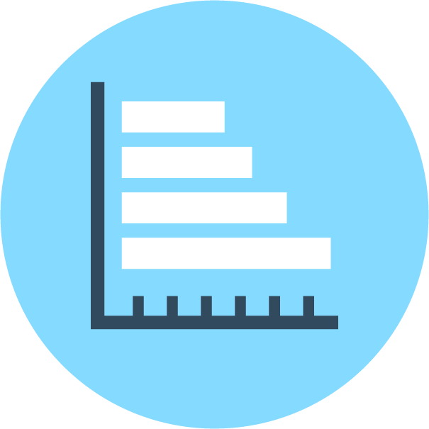
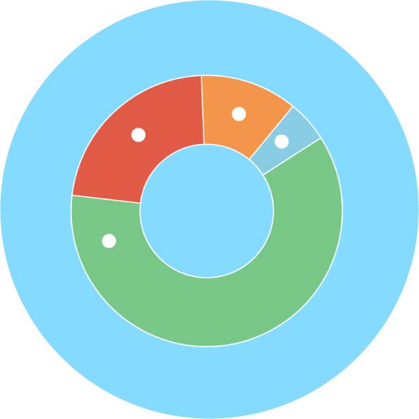
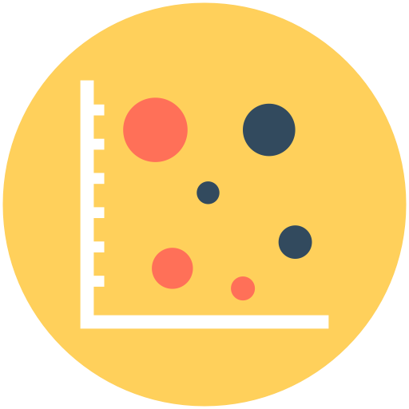
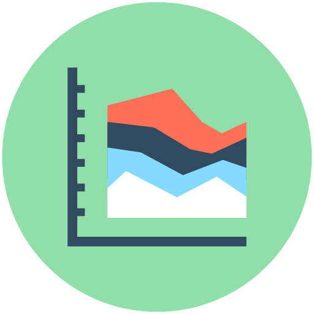
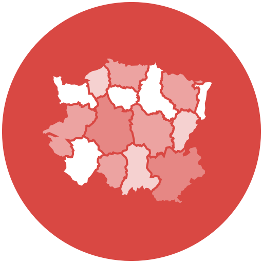

<main>
	<h2>Comparación</h2>
	<h3>Comparación de pocos elementos (Gráficos recomendados)</h3>
	<section class="charts">
				<article>
					<a href="grafico-barras.html">
					<h3>Gráfico de barras</h3></a>
				</article>
				<article>
					<a href="grafico-dona.html">
					<h3>Gráfico de dona</h3></a>
				</article>
				<article>
					<a href="grafico-pie.html">
					<h3>Gráfico de Pie</h3></a>
				</article>
	</section>
	<h3>Comparación de muchos elementos (Gráficos recomendados)</h3>
	<section class="charts">
		<article>
					<a href="grafico-columnas.html">
					<h3>Gráfico de Columnas</h3></a>
				</article>
				<article>
					<a href="grafico-burbuja.html">
					<h3>Gráfico de Burbujas</h3></a>
				</article>
				<article>
					<a href="grafico-linea.html">
					<h3>Gráfico de Línea</h3></a>
				</article>
				<article>
					<a href="histograma.html">
					<h3>Histograma</h3></a>
				</article>
				<article>
					<a href="grafico-area-apilada.html">
					<h3>Gráfico de área apilada</h3></a>
				</article>
				
	</section>
	<h3>Utilizando Mapas Geográficos (Gráficos recomendados)</h3>
	<section class="charts">
		
				<article>
					<a href="mapa-cloropletico.html">
					<h3>Mapa Coroplético o de calor</h3></a>
				</article>
	</section>

</main>

